Open today's slides on your own phone or laptop — then you can run real code yourself.
hassanmiir.github.io/cpp-course/lecture5/
Dr. Mir Hassan
Associate Professor in Artificial Intelligence and Trustworthy Digital Systems
📱 Point your camera here
Lecture 5 · Loops
Never write the same line twice
Grade 200 students by copy-pasting cout 200 times? Never. A loop does the same work again and again — 5 times or 5 million — from three lines.
A 2-hour hands-on session · you'll build a multiplication table
Where We Left Off
Last time your program chose a path once
An if runs its block zero or one time. But a gradebook has 30 students, a table has 12 rows, a game runs every frame…
You need to do something many times. That's a loop — and it's three ideas: start, keep going while…, step.
1 → 2 → 3 → … → done
PART 1
The while loop
Keep repeating as long as a condition stays true.
Check, run, repeat
The infinite-loop trap
Run a countdown — live
The Shape
Check the condition, run the body, repeat
int i = 1; // start
while (i <= 3) { // keep going while true
cout << i << " ";
i = i + 1; // step — or it never ends!
}
Prints 1 2 3. When i becomes 4, the test is false and the loop exits.
i <= 3 ?
↓ true
print i, then i = i + 1
⟲ loop back to the check
when false → exit ↓
Watch It Run Plays automatically
See a while loop step through
The counter ticks, the condition flashes TRUE/FALSE, the output fills, and it loops back — with a note at each step.
Your Turn · Live Code Run it!
A countdown
Run it. Then change the start number. What happens if you delete the n = n - 1 line? (Don't — that's the infinite loop!) (Input: 5)
#include <iostream>
using namespace std;
int main() {
int n;
cin >> n;
while (n > 0) {
cout << n << "... ";
n = n - 1; // the step that ends the loop
}
cout << "Liftoff!" << endl;
return 0;
}
You Be the Computer On paper · 3 min
Trace it — what does it print?
Run this loop in your head. Write every value of i that gets printed, in order.
int i = 2;
while (i < 10) {
cout << i << " ";
i = i + 3;
}
Output:? ? ? ?
How many numbers print??
Track i each time: 2, then +3, then +3… stop when i < 10 is false.
The off-by-one trapAfter printing 8, i becomes 11. The check 11 < 10 is false, so 11 never prints. Always ask: what's the last value that passes the test?
PART 2
The for loop
The same three ideas — start, test, step — on one tidy line.

Count a known number of times
Build a multiplication table
Three Parts, One Line
for — start, test, step together
for (int i = 1; i <= 5; i++) {
cout << i << " ";
}
// prints 1 2 3 4 5
i++ is shorthand for i = i + 1.
int i = 1 — start
Runs once, before the loop begins.
i <= 5 — test
Checked before every pass. True → run; false → stop.
i++ — step
Runs after each pass. Moves you toward the end.
while vs forSame three ideas. Use for when you know how many times; while when you loop until something happens.
Watch It Run Plays automatically
See a for loop step through
Same loop, tidier. Watch the start → test → body → step cycle repeat four times, then the test fail.
Your Turn · Live Code Run it!
A multiplication table
The 7× table, built by a loop. Change 7 to your favourite number and run. (Input: none)
#include <iostream>
using namespace std;
int main() {
int table = 7;
for (int i = 1; i <= 10; i++) {
cout << table << " x " << i << " = " << table * i << endl;
}
return 0;
}
Quick Check Think!
How many times does this loop run?
for (int i = 0; i < 5; i++) {
cout << "*";
}
Careful with the start value and the <.
A 4 times
B 5 times
C 6 times
PART 3
break, continue & traps
Escape early, skip a turn — and dodge the loops that never end.
break — leave now
continue — skip to next
the infinite loop
Two Escape Hatches
break leaves · continue skips
for (int i = 1; i <= 10; i++) {
if (i == 5) break; // stop the whole loop at 5
cout << i; // prints 1234
}
for (int i = 1; i <= 5; i++) {
if (i == 3) continue; // skip just this turn
cout << i; // prints 1245
}
break
Exits the loop entirely — found what you wanted, stop looking.
continue
Skips the rest of this pass, jumps to the next one.
Watch It Run Plays automatically
See break escape the loop
The loop prints 1, 2, 3 — then at i == 4 the flow jumps straight out. 4, 5, 6 never run.
Watch It Run Plays automatically
See continue skip one pass
At i == 3 the body is skipped (no 3 printed) — but the loop keeps going. Output: 1 2 4 5.
Danger Zone
The loop that never ends
int i = 1;
while (i <= 5) {
cout << i;
// forgot i++ → i is ALWAYS 1
} // prints 1 1 1 1 1 1 ... forever
Why it hangs
If the condition never becomes false, the loop runs forever and your program freezes.
The rule
Every loop must change something that moves the condition toward false.
If it ever hangsPress Ctrl + C (or close the tab) to stop it — then find the missing step.
Quick Check Think!
What does this print?
for (int i = 1; i <= 6; i++) {
if (i == 4) break;
cout << i;
}
A 123
B 1235 6
C 12356
PART 4
Build it: sum & table
Add up 1…N, then print a full times-table — pure loop power.
Sum 1 + 2 + … + N
The full multiplication table
Work with a partner
Pair Challenge · Use Your Brain 15 min
Sum, then the table
Read a number N, then:
Sum: use a loop to add 1 + 2 + … + N and print the total.
Table: print the full N × table (N×1 up to N×10), one line each.
Stretch: print only the even numbers from 1 to N (hint: i % 2 == 0).
Watch the boundsFor the sum, loop i <= N (not < N) so N itself is included. Start your running total at 0.
Pair Challenge · Build Here Run it!
Your sum & table
Starter reads N. You add the sum loop and the table loop. (Input: 5)
#include <iostream>
using namespace std;
int main() {
int N;
cin >> N;
// TODO 1 — SUM: start total = 0, loop i from 1 to N, total += i
int total = 0;
for (int i = 1; i <= N; i++) {
total = total + i;
}
cout << "Sum 1.." << N << " = " << total << endl;
// TODO 2 — TABLE: loop i from 1 to 10, print N * i
// (write your table loop here)
return 0;
}
One Solution Compare yours
How it works
int total = 0;
for (int i = 1; i <= N; i++) // 1..N inclusive
total += i; // running sum
cout << "Sum = " << total << endl;
for (int i = 1; i <= 10; i++) // the table
cout << N << " x " << i << " = " << N * i << endl;
// stretch: even numbers
for (int i = 1; i <= N; i++)
if (i % 2 == 0) cout << i << " ";
Running total
Start at 0, add i each pass. += is "add to".
One loop, ten lines
The loop variable i becomes the multiplier.
Even filter
i % 2 == 0 inside the loop — last lecture's trick, reused.
Recap
What you can do now
Repeat
while loops until a condition turns false; for counts a known number of times — same three ideas.
Control
break leaves early, continue skips a turn — and every loop must move toward its end.
MilestoneYour programs now scale — the same few lines handle 5 students or 5 million. That's the power of a loop.
Keep These Words
Today's keywords — click any one for a reminder
while
Loop while true
for
Counting loop
i++
Add one
break
Exit the loop
continue
Skip a turn
infinite loop
Never ends
off-by-one
The ±1 bug
i
Loop counter
Before Next Time
Practice (15–20 min)
Factorial
Read N, compute N! = 1×2×…×N with a loop (start the product at 1, not 0!).
A triangle of stars
Print a right triangle: row 1 has one *, row 2 has two… up to N. (A loop inside a loop!)
Loop your gradebook
Read 5 scores in a loop and print the average — Group B needs this for a whole class.
Next Lecture
Lecture 6 — Functions
Loops repeat lines in one place. Next you'll wrap code in a function — name it once, call it anywhere, as many times as you like.
Write your own functions
Pass in values, get a result back
Turn your calculator into reusable tools
Three lines, a million times.
Loops are how a short program does enormous work. You just unlocked scale. Next: naming and reusing your code.
Dr. Mir Hassan · Associate Professor in AI & Trustworthy Digital Systems